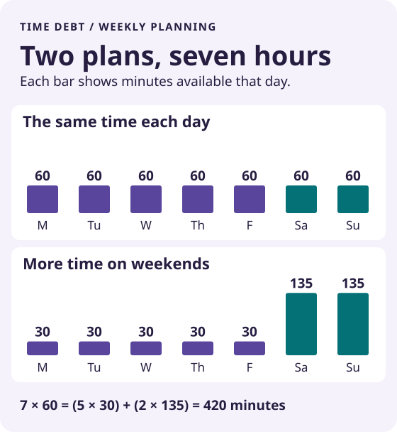

Compare the same scope
Use the same apps and categories for both plans. Work, navigation and essential communication may need different rules from recreational browsing.
Weekly Screen Time Budget Calculator: Weekday and Weekend Limits
Five weekdays and two weekend days add up differently. Compare two plans for the same group of apps before choosing the limits you want to try.
Try the free tool ↓No sign-up · No tracking scripts · Your inputs stay in this page
Nothing is saved or sent. Reloading restores the example.
EXPLORE THE RESULT
A plan of 90 minutes on each weekday and 120 on each weekend day allows 690 minutes per week. A 60/90 plan allows 480. The difference is 210 minutes, or 3 hours 30 minutes.

Skipping two visits and trimming the rest are different decisions. Try the same daily pattern both ways before you set a weekly allowance.
<iframe src="https://udrwu9c0tjuedqy2.github.io/hla-focus/time-debt/weekly-screen-time-budget-calculator/visits.html" title="Fewer visits or shorter visits?" width="100%" height="780" loading="lazy" style="border:0" referrerpolicy="no-referrer"></iframe>
Use the same apps and categories for both plans. Work, navigation and essential communication may need different rules from recreational browsing.
If you use less than your allowance, your actual screen time is lower. This tool compares permitted minutes, not observed behaviour.
Choose limits you can evaluate against your own routine. There is no universal healthy screen-time number calculated here.
Time Debt: Screen Time
Time Debt supports weekday and weekend allowances for selected apps. When you choose to borrow extra time, it shows the effect on tomorrow before confirmation and repays it automatically within your settings.
Explore Time Debt on the App Store ↗One core plan is free; optional Pro adds features. This browser comparison does not read your usage, block apps, model borrowing or sync settings. A smaller budget is not proof of time actually saved.
App details checked against the official App Store listing on November 4, 2026. Check current availability and purchase terms there.
No. It shows one seven-day budget. Multiplying it into years would not demonstrate a real change in behaviour.
The result clearly says more minutes rather than calling it a saving.
No. Borrowing and repayment are separate app behaviours. This tool compares base weekday and weekend allowances only.
Share the public guide. Your entries and results are not included.
Open the public guide link